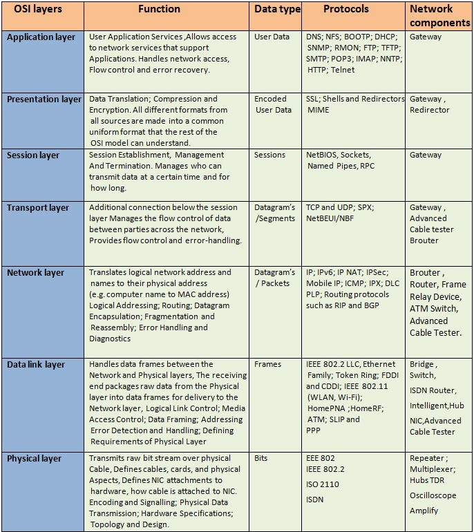

Computer Network Management:
Chapter 1
INTRODUCING NETWORKS
• Definition of Computer Network
Computer network or simply network refers to the connection of two or more computers by some type of medium.
• Computer networks allows:
The transfer of files, data, and even shared applications without copying anything to floppy disk.
Computers to share items such as printers, scanners, fax machines, processors, disk drives, and other resources.
Networking Terminology:
• Media:
Refers to the wire cabling that form the connections in most networks.
Some networks use wireless transmission media, such as infra-red or radio signals.
• Client/server networks:
Servers host the resources for the clients to use and provide security.
A client is the computer that requests resources from the server.
• Peer-to-peer network:
When every computer on a network acts as both a client and a server. Also known as “workgroups”.
• LAN, WAN, MAN, SAN:
Local area network (LAN)is contained within a company or department and located in a single geographic area.
Wide area network (WAN) spans multiple geographic areas and is usually connected by common telecommunication carriers.
Metropolitan area network (MAN) refers to the intermediate stage between a LAN and a WAN.
Storage area network (SAN) refers to a series of storage devices that are networked together to provide very fast data storage for a network or subnetwork.
• Network Operating System (NOS):
Allows communication, security, and distribution of data, files, and applications over a network.
• Network Interface Card (NIC):
A device that allows a computer or other device to connect to a network through the media.
• Networking hardware:
Describes all the physical components of a network, such as the NIC, cable, hub, switch, router, and any related connectors or devices.
• Networking software:
The programs used to run a network.
• Virtual private networks:
Network that uses a public communications infrastructure (like the Internet) to facilitate private communication between a company LAN and remote employees.
Extranet is the part of the company’s network that allows access to non-employees.
Intranet is the part of the company’s network that allows access to employees.
Advantages of Layering:
Simplifies the networking model
Enables programmers to specialize in a particular level or layer
Provides design modularity
Encourages interoperability
Allows networking vendors to produce standardized interfaces
• Protocol:
Defined method for communicating between systems. Computers must use a common protocol to communicate properly.
Examples: TCP/IP and IPX/SPX

When the network user sends data to the network, it goes through a five-step data encapsulation process.